Trusted evaluation, oversight, and deployment assurance for high-stakes AI systems.
Helping organisations evaluate whether AI systems are reliable, governable, and safe for real-world deployment.
AI systems can fail silently.
Strong aggregate accuracy can hide subgroup failures, fairness gaps, and deployment risks. Ducaltus helps organisations identify hidden reliability and governance risks before AI systems are deployed in sensitive or decision-critical environments.
Who We Support
Built for high-stakes AI deployment.
Ducaltus supports organisations developing, evaluating, or deploying AI systems where model failures can carry operational, legal, ethical, or public-impact consequences.
Capabilities
Assurance across the AI deployment lifecycle.
AI Risk Auditing
Structured review of model behaviour, evaluation gaps, and deployment risk exposure.
Fairness & Bias Evaluation
Analysis of subgroup disparities, fairness gaps, and error-rate differences across populations.
Deployment Assurance
Assessment of whether AI systems are ready for use in sensitive or decision-critical settings.
Subgroup Performance Analysis
Evaluation of model performance beyond aggregate accuracy, including hidden subgroup failures.
Threshold & Error Trade-off Review
Analysis of false positive and false negative trade-offs under different deployment conditions.
Governance & Oversight
Support for documentation, risk reporting, accountability, and responsible AI governance processes.
Selected Research
Turning AI fairness research into deployment assurance.
Ducaltus applies research in fairness metric disagreement, FDI, intersectional subgroup reliability, deployment risk analysis, and high-stakes AI evaluation to support practical AI assurance and governance.
Current Research Direction
FairRisk-FDI, Intersectional Fairness & Deployment Risk
Current work focuses on extending fairness disagreement analysis into decision-aware deployment risk, intersectional subgroup evaluation, and practical assurance methods for high-stakes AI systems.
Founder
Khalid Adnan Alsayed
AI fairness and deployment risk researcher focused on subgroup reliability, fairness metric disagreement, operational AI risk, and assurance methods for high-stakes machine learning systems.
Accuracy is not assurance.
Ducaltus exists to help organisations move beyond surface-level performance metrics and evaluate whether AI systems are fair, reliable, governable, and fit for deployment.
Contact
Discuss an AI assurance review.
For audits, collaborations, research partnerships, or deployment risk reviews, contact Ducaltus.
hello@ducaltus.com